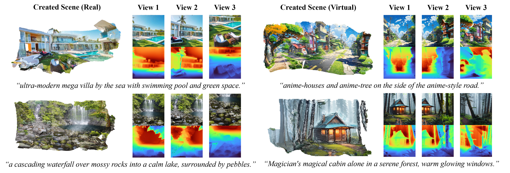

Results

Representative generated scenes. SceneArchitect supports diverse virtual and real scenes while preserving dominant layouts, local structures, and scene-level appearance during progressive expansion.

Qualitative comparison. Compared with representative progressive 3D scene generation methods, SceneArchitect better preserves geometry and scene content across successive viewpoints.
| Method | Aesthetic ↑ | CLIP-Score ↑ | CLIP-IQA ↑ | BRISQUE ↓ | NIQE ↓ | ||
|---|---|---|---|---|---|---|---|
| Quality | Colorful | Sharp | |||||
| Text2Room | 4.415 | 25.556 | 0.465 | 0.104 | 0.332 | 42.552 | 3.732 |
| LucidDreamer | 4.923 | 30.443 | 0.619 | 0.730 | 0.199 | 38.301 | 5.834 |
| BloomScene | 5.088 | 31.810 | 0.743 | 0.701 | 0.250 | 24.260 | 3.303 |
| DreamScene360 | 4.858 | 28.602 | 0.500 | 0.495 | 0.158 | 29.727 | 5.091 |
| LayerPano3D | 4.994 | 31.383 | 0.795 | 0.808 | 0.183 | 23.966 | 3.212 |
| WonderJourney | 4.846 | 30.300 | 0.672 | 0.680 | 0.200 | 26.355 | 5.001 |
| WonderWorld | 4.922 | 32.443 | 0.803 | 0.813 | 0.258 | 25.027 | 3.225 |
| SceneArchitect (Ours) | 5.136 | 33.514 | 0.803 | 0.845 | 0.279 | 22.696 | 3.074 |
Quantitative comparison. Results are averaged over 6 scenes and 180 matched views. SceneArchitect achieves the strongest overall text–scene alignment and perceptual quality among the compared methods.